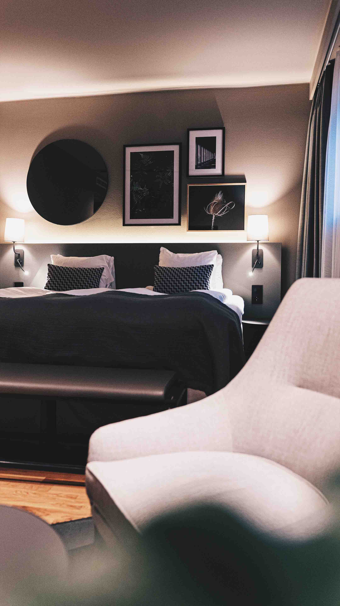

LUXURY HIGHLIGHTS
From well-curated deals for extended stays to unbeatable discounts for advance purchases, our special offers not only gives you the best value for money but also significantly contributes to a memorable and hassle-free holiday experience!

Accommodation

Dining